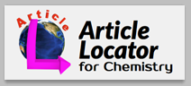
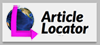
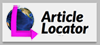
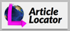

Supported Publishers
The list of supported journals is here.- American Chemical Society
- Wiley
- Elsevier
- Nature Publishing Group
- American Physical Society
- Springer
- Annual Reviews
- PLoS
- IOP Science
- Cell Press
- American Institute of Physics
- Some other journals
Parameters
You can specify parameters like this:http://locator.web.fc2.com/index.html?q=J. Am. Chem. Soc., 2011, 133, 4172–4174&redirect=yes
- q=[citation text]
- Specify a citation text
- redirect=[yes/no]
- Redirects you to the online journal immediately. (Default: no)
Update History
11/4/12
- User interface was refined. Parsing gets done automatically when the citation is entered.
3/4/12
- User interface was refined.
- The site is moved to http://alocator.web.fc2.com/
- Support for IOP Sicience was addded.
10/16/11
- More journals are supported (AIP journals, etc.)
- Twitter link was introduced.
- Some bugs were fixed.
7/25/11
- More publishers are supported (PLoS, Chemical Society of Japan, and Cell Press)
- Support for RSC journal articles without a volume number (e.g. "J. Chem. Soc., Chem. Commun., 1979, 866-867") was added.
- Improvement was made in ambiguous search on a journal title.
- An error report form was introduced.
5/14/11
- Support for Elsevier journals was added.
3/25/11
- Site opened.
Source Code
Source code is hosted on Github.
The author (Hiroyuki Kai) holds the copyright of the program on this website. The program on this website is provided under BSD license (FreeBSD license). (See license.)
When you link to this website, you may use banner images below.

 

